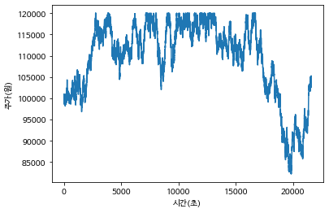
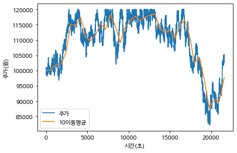
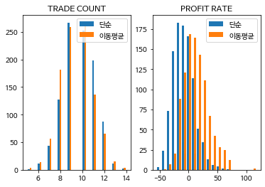
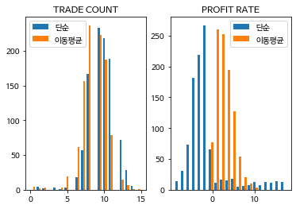
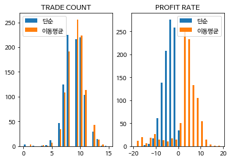

2021_Machine_Learning_Programming_Midterm
2021년 2학기 머신러닝 프로그래밍 중간고사
- 시작: 2021년 10월 22일
- 마감: 2021년 10월 29일
2021년도 2학기 머신러닝 프로그래밍 과목의 중간고사는 비대면, 비실시간으로 진행됩니다. 이 파일을 본인의 google drive등으로 복사 해 간 다음 google colaboratory에서 실행하거나, 다운로드 받은 다음 각자 사용할 수 있는 컴퓨팅 환경 하에서 내용ᅟ 작성, 코드 작성, 실행한 다음 .ipynb 파일을 ecampus를 통해 제출하시면 됩니다.
중간고사까지는 파이썬 프로그래밍과 데이터를 다루기 위한 기본적인 단계만 다루었고, 이 내용과 관련해 아래에서 드리는 질문에 대한 답을 제시 해 주시면 됩니다.
참고로, 아래 문제의 상황은 현실과는 거리가 멀고, 실제 상황에 적용하기에는 무리가 있습니다.
여기에서는 주어진 상황에 대해 python으로 구현할 수 있는지를 묻기 위해, 아주 간단한 일종의 시뮬레이션 코드를 작성하면서 프로그램 작성 방법을 연습합니다.
배경: 주식 매매 전략 중 일부에서는, 기업의 가치 분석은 무시하고 주가 변동 상황만을 이용해 매매하기도 합니다. 물론 실제 주가 변동은 각종 외부 요인이나 시장 참여자들의 심리, 기업 가치에 따라 변화하지만, 여기에서는 단순화해서 랜덤하게 등락을 반복하며 평균적으로는 일정 패턴이 유지된다고 합시다.
(문제 0) 현재 공모전 등 참여 상황에 대해 짧게 알려주세요. (단순 설문조사입니다)
- 주제:
- 내용 요약:
- 웹사이트 등 정보:
- 계획, 현재 상태:
…. 내용 정리 …
NLP 텍스트 마이닝, 데이터마이닝
캐글사이트에서 텍스트 마이닝 분야를 공부하고 있습니다. 현재 진행중인 공모전은 따로 없으나 혼자 사이트에서 공부 하고 있습니다. 유데미사이트에서 텍스트 마이닝,데이터 마이닝 쪽을 수강하고 공부할 예정입니다.
(문제 1) 주가가 매 초, 최소 단위 500원씩 변동할 수 있다고 합시다. 아침 9시부터 오후 3시까지 계속해서 주식 매매가 이루어진다고 했을 때 하루동안의 주가 데이터를 list에 담아주세요.(10)
- for loop 이나 while loop을 활용하세요
- 기본 random module을 사용하세요
- numpy사용하지 않고, 기본 list type을 활용하세요
- 시간 데이터를 담는 list의 변수명은 times, 주가 데이터를 담는 list의 변수명은 prices로 해주세요.
- 초기 자금이나, 장 시작시의 주식 가격은 본인이 원하는대로 임의의 값으로 넣어주세요. (단 최소 단위는 500원)
- 주가 변동폭이 시작 가격 기준으로 상하 20%를 넘지 않아야 합니다.
- 주가 최소값은 500원으로 합니다. (0원이나 음수가 나오면 안됩니다)
## 여기에 코드 작성하기
import random
open_price = 100000 # 시작 가격
price_range = 500
prices = [open_price] # 주가
end = 3600 * (15-9) # 9시부터 15시까지 차이 (초)
for i in range(1,end+1): # 3시를 포함해서 반복문을 진행한다
# 주가는 -500 ~ 500원씩 변동이 생기되, 상하한 20%를 넘지않도록 해줌.
price = prices[-1] + random.randrange(-price_range, price_range+1)
price = max(min(price, open_price * 1.2), open_price * 0.8) # 상 하한 20% 범위 설정
prices.append(price)
prices
[100000,
99791,
100200,
100571,
100335,
99981,
99945,
100031,
100331,
100607,
101000,
101016,
100782,
100473,
100629,
100928,
100655,
100492,
100520,
100076,
99927,
100284,
100203,
99887,
99956,
99671,
99408,
98973,
99136,
99040,
98573,
98620,
99085,
99469,
99325,
99189,
98861,
99330,
99538,
99285,
99230,
99561,
99713,
100041,
100120,
99888,
100072,
99816,
100056,
100493,
100426,
100479,
100342,
99975,
100253,
100274,
100070,
100229,
100028,
99942,
100107,
100353,
99990,
99814,
99701,
99440,
99046,
99159,
99285,
98831,
98543,
98442,
98761,
98455,
98648,
98921,
99341,
99282,
99471,
99381,
99858,
99433,
99192,
99001,
99474,
99696,
99504,
99403,
99009,
99296,
98881,
98460,
98746,
98419,
98686,
98487,
98814,
98539,
98702,
98643,
98617,
98488,
98588,
98557,
98692,
98996,
98556,
98177,
98481,
98636,
98792,
99062,
98592,
98496,
98826,
99175,
99247,
98833,
99151,
99209,
99541,
99666,
99987,
100139,
100015,
100102,
100254,
100165,
100173,
99941,
100118,
99921,
99973,
99473,
99564,
99421,
99473,
99347,
99777,
99959,
99737,
99672,
99560,
99670,
99749,
99337,
99169,
98881,
98915,
98930,
98649,
98548,
98738,
98969,
98789,
98730,
99030,
99486,
99842,
100170,
100522,
100627,
100303,
100147,
100615,
100483,
100399,
100519,
100655,
100263,
100529,
100329,
100047,
99592,
99878,
100364,
99906,
99968,
100334,
100291,
100625,
100840,
100832,
100808,
100842,
100495,
100877,
101135,
100787,
100459,
100573,
101001,
100691,
100271,
100648,
101018,
100947,
100691,
100518,
100629,
100261,
99770,
99482,
99330,
99403,
99873,
99606,
99528,
99739,
99283,
99416,
99298,
98968,
98956,
99093,
99472,
99647,
99941,
99606,
99940,
100425,
100171,
100447,
100735,
100752,
100927,
100616,
100761,
101019,
101456,
101939,
101870,
101738,
101447,
101177,
100770,
100821,
100907,
100916,
101409,
101283,
101138,
101241,
101117,
101596,
101282,
101282,
101532,
101882,
102346,
102387,
101984,
101868,
101518,
101812,
102027,
102498,
102144,
102130,
102556,
102893,
102600,
102648,
102583,
102817,
103196,
103211,
103552,
103619,
103807,
103862,
104267,
104355,
104231,
103938,
103925,
103465,
103226,
102902,
103002,
103045,
103064,
102642,
102245,
101870,
101640,
101202,
101575,
101782,
102189,
101710,
101904,
101500,
101317,
101019,
100781,
101233,
101036,
101266,
101026,
101043,
100943,
100943,
100642,
100952,
101168,
100932,
100639,
100313,
100461,
100798,
100762,
101188,
101575,
101523,
101658,
101908,
101650,
101507,
101905,
101532,
101144,
100738,
100358,
99876,
99519,
99883,
100270,
100442,
100891,
101382,
101352,
100977,
101083,
100798,
101246,
100905,
100879,
100944,
100816,
100729,
101206,
101204,
100705,
100423,
100794,
100449,
100554,
100879,
100413,
100446,
100521,
100690,
100892,
101018,
100613,
100325,
100620,
100456,
100454,
100211,
100609,
100380,
100623,
100536,
100147,
100276,
100483,
100415,
100720,
101166,
100672,
101023,
101455,
100974,
101214,
101105,
100857,
100731,
101016,
101002,
100709,
101138,
101544,
101253,
101600,
101337,
101214,
101676,
101309,
101135,
101167,
101262,
101365,
101635,
101348,
101493,
101383,
101187,
101060,
100763,
101216,
100730,
100793,
101264,
100863,
101181,
100832,
100578,
101009,
100578,
100518,
100452,
100039,
100080,
100193,
99894,
100118,
100536,
100260,
100633,
101115,
100660,
100306,
100525,
100120,
99981,
100011,
100198,
100230,
100586,
100817,
100439,
100375,
100455,
100778,
100689,
100428,
100894,
101022,
101078,
100931,
100760,
100588,
100274,
100329,
100243,
100205,
99942,
99564,
99713,
99878,
100084,
100336,
99926,
100114,
100158,
100500,
100533,
100482,
99990,
99620,
99312,
99716,
99432,
99264,
99273,
99117,
98758,
99000,
98948,
98876,
99127,
99587,
99906,
99816,
99964,
100255,
99940,
99443,
99292,
99571,
99696,
99621,
99121,
98958,
99232,
99476,
99908,
99813,
99732,
99242,
99603,
99569,
99528,
99356,
99179,
99421,
98935,
99232,
99387,
99064,
99261,
99322,
99344,
99524,
99933,
99454,
99480,
99426,
99882,
100360,
100274,
100644,
100347,
100010,
100011,
99901,
100129,
99893,
100104,
100531,
100242,
99964,
99715,
100094,
100418,
100033,
100482,
100342,
100586,
100192,
100165,
100200,
100322,
100785,
100575,
100225,
100652,
100198,
99927,
100039,
100344,
100023,
100292,
100027,
99957,
99943,
100311,
99859,
100261,
100286,
100471,
100010,
99596,
99211,
98715,
98890,
99332,
99330,
99584,
99301,
99067,
99403,
99250,
99381,
99254,
98971,
99163,
99175,
98970,
99289,
99198,
99310,
99377,
99569,
99999,
99888,
100077,
100058,
99667,
99337,
99484,
99725,
99862,
99393,
99249,
98781,
99000,
99133,
99160,
98718,
98847,
98893,
99168,
98677,
99123,
99128,
99447,
99735,
99746,
99707,
100116,
100286,
100050,
99882,
99991,
100037,
100389,
100090,
99772,
99948,
99882,
99792,
100158,
99795,
100209,
100031,
99554,
99996,
99686,
100027,
100125,
100266,
100104,
100005,
100286,
100095,
100452,
100246,
100537,
100628,
100978,
100621,
100479,
100196,
100333,
100615,
100658,
100551,
100907,
101308,
101344,
101143,
101227,
101421,
101548,
101962,
101589,
101585,
101746,
101286,
100891,
101187,
101270,
101103,
101576,
101958,
102159,
102449,
102067,
102160,
101665,
101434,
101129,
101146,
100749,
100390,
100019,
100314,
100595,
100645,
100569,
100419,
100837,
101059,
100952,
101356,
101099,
101115,
101082,
101367,
101583,
101307,
101427,
101586,
101693,
101789,
101885,
101600,
101502,
101412,
101840,
101713,
101628,
101517,
101177,
101299,
100852,
100704,
100640,
100704,
100763,
100500,
100892,
101253,
100922,
101351,
101343,
101742,
102208,
102066,
101815,
101548,
101857,
101381,
101429,
101584,
101702,
101890,
102090,
102117,
101906,
101832,
101967,
102127,
101694,
101767,
102206,
101751,
101423,
101208,
101205,
101389,
101876,
101402,
101734,
102025,
102312,
102453,
102522,
102813,
102451,
102339,
102641,
102945,
103318,
103339,
103814,
104242,
104132,
103650,
103830,
103781,
103325,
103645,
103537,
103064,
102836,
103071,
102600,
102607,
102182,
102587,
102511,
102622,
102826,
103127,
103377,
103797,
103664,
103320,
103198,
103062,
103139,
102770,
102562,
102821,
103072,
102728,
102303,
102788,
102672,
102667,
102367,
101869,
101630,
101424,
101197,
101105,
101421,
101123,
101365,
101576,
101220,
101118,
101174,
101209,
101266,
101671,
102169,
102205,
102057,
101929,
102295,
101912,
101597,
101260,
100859,
101270,
100831,
100849,
101098,
101484,
101811,
101367,
100978,
100986,
100734,
100708,
101076,
100810,
100762,
100805,
100667,
100172,
100482,
100954,
101096,
101400,
101142,
101481,
101616,
101569,
101486,
101027,
100631,
100654,
100836,
100763,
100921,
101078,
101558,
101146,
101463,
101536,
101214,
101308,
101291,
101752,
101614,
101941,
101470,
101532,
101673,
101301,
101587,
101672,
101322,
101339,
101813,
101976,
102003,
101528,
101237,
101366,
101370,
101664,
101701,
101430,
101637,
101568,
101647,
101422,
101749,
101745,
101317,
101666,
101430,
101481,
101540,
101303,
100901,
100661,
100818,
100911,
100515,
100305,
100094,
99759,
99992,
99889,
100344,
100109,
100569,
101024,
101165,
100689,
100718,
100310,
99837,
100012,
99549,
99745,
99739,
99999,
100139,
100065,
100515,
100832,
101037,
101120,
101147,
101342,
101426,
101674,
102051,
101586,
101284,
101621,
101203,
101622,
101956,
101813,
101662,
101408,
101308,
101673,
101671,
101728,
101394,
101763,
102077,
102391,
102823,
102950,
103101,
102873,
103279,
103321,
103661,
103533,
103890,
104146,
104280,
104111,
104583,
104809,
105184,
104787,
104894,
105044,
104654,
104636,
104275,
104282,
104573,
104139,
103879,
104332,
103869,
104314,
103883,
103705,
103413,
103353,
103063,
103267,
103509,
103619,
103508,
103548,
103862,
104279,
104307,
104769,
105020,
105267,
105010,
104783,
104285,
104168,
103961,
104121,
104238,
103762,
103917,
103610,
103677,
103275,
103540,
103145,
102814,
102954,
102535,
102928,
102559,
102223,
101960,
101460,
...]
(문제 2) 위에서 만든 times와 prices를 이용해 주식 가격을 시간에 대해 그려주세요. (10)
- matplotlib을 이용해 그려주세요.
- 그림을 그릴때 가로축이 시간(초), 세로축이 주가(원)가 되도록 해 주세요.
- 시간축 표기를 시:분:초 에 맞추셔도 좋습니다 (필수 사항은 아님)
# 구글 코랩(colab) 한글 깨짐 현상 해결방법 /나눔 폰트 설치 (Nanum)
!sudo apt-get install -y fonts-nanum
!sudo fc-cache -fv
!rm ~/.cache/matplotlib -rf
## 여기에 코드 작성하기
import matplotlib.pyplot as plt
plt.rc('font', family='NanumBarunGothic') # 한글폰트 적용
times = [i for i in range(0, end+1)] # X축에 쓰일 시간(초)
plt.plot(times, prices)
plt.xlabel('시간(초)')
plt.ylabel('주가(원)')
plt.show()

(문제 3) 매 10분마다 주가를 확인해 주가가 오르면 전부 팔고 내리면 전부 사는 (무식한)전략을 따른다고 합시다. 이 때 하루동안 매매한 횟수와, 수익률을 계산하세요.(10)
- 함수를 정의해 구현하셔도 됩니다.
## 여기에 코드 작성하기
## 매수/매도를 1번의 매매라고 보고, 매매횟수는 매수 에서만 체크한다.
def simple_strategy(prices):
INIT_ACCOUNT = 1000000
step = 10 * 60 # 몇 초 간격으로, 주가를 확인할 것인지 설정.
trade_count = 0 # 매매 횟수
account = INIT_ACCOUNT # 초기 자본
stock = 0 # 구매한 주식 개수
profit_rate = 0 # 수익률
for i in range(step, len(prices), step):
if prices[i] > prices[i-step] and stock == 0: # 주가가 올랐고, 아직 현금보유중이라면, 매수한다.
stock = account // prices[i] # 계좌 잔액 / 주가 만큼 주식을 매수한다.
account = account - stock * prices[i] # 남은 계좌 잔액을 업데이트한다.
trade_count += 1 # 매매횟수를 증가시킨다.
elif prices[i] < prices[i-step] and stock != 0: # 주가가 내렸고, 주식 보유중이라면, 전부 매도한다.
account += stock * prices[i]
stock = 0
if stock != 0: # 아직 주식을 보유중이라면, 마지막 주가로, 계좌 총액을 계산한다.
account += stock * prices[-1]
profit_rate = (account-INIT_ACCOUNT) / INIT_ACCOUNT * 100 # 수익률 계산
return trade_count, profit_rate
trade_count, profit_rate = simple_strategy(prices)
print(f'매매횟수: {trade_count} 수익률 : {profit_rate}%%')
매매횟수: 9 수익률 : -1.143%%
(문제 4) 위에서 만든 times와 prices를 이용해 10분 윈도우로 이동평균을 구해 times10, prices10에 담아 prices와 함께 그려주세요.(10)
- 파이썬 기본 문법만 사용해주세요. 즉 list를 사용하고, for 문이나 while문을 이용해 주세요.
- matplotlib을 이용하세요
- 함수를 정의해 구현하셔도 됩니다.
## 여기에 코드 작성하기
import matplotlib.pyplot as plt
def get_ma10(prices):
step = 10 * 60 # 10분 윈도우
end = 3600 * (15-9)
prices10 = [prices[0]] # 초기값은 초기 주가로 설정.
for i in range(step, end+1, step):
ma = sum(prices[i-step+1:i+1]) / step # ex) 10분의 이동평균선 => 1초 ~ 600초의 평균. 자신을 포함해야 하므로, i+1로 설정.
prices10.append(ma)
return prices10
step = 10 * 60 # 10분 윈도우
times10 = [i for i in range(0, end+1, step)]
prices10 = get_ma10(prices)
plt.rc('font', family='NanumBarunGothic') # 한글폰트 적용
plt.plot(times, prices)
plt.plot(times10, prices10)
plt.xlabel('시간(초)')
plt.ylabel('주가(원)')
plt.legend(['주가','10이동평균'])
plt.show()

(문제 5) 매 10분마다 현재 주가와 이동평균 값을 비교해 이동평균보다 높으면 주식을 전부 팔고, 낮으면 사는 방식의 매매 전략을 택한다고 합시다. 하루동안 매매를 계속했을 때 매매 횟수와 수익률을 계산하세요(15)
- 함수를 정의해 구현하셔도 됩니다.
## 여기에 코드 작성하기
def ma10_strategy(prices, ma10):
INIT_ACCOUNT = 1000000
step = 10 * 60 # 움직일 시간 간격
trade_count = 0 # 매매 횟수
account = INIT_ACCOUNT # 초기 자본
stock = 0 # 구매한 주식 개수
profit_rate = 0 # 수익률
for i in range(1, len(ma10)):
if ma10[i] > prices[i*step] and stock == 0: # 주가 < 이동평균, 아직 현금보유중이라면, 매수한다.
stock = account // prices[i*step] # 계좌 잔액 / 주가 만큼 주식을 매수한다.
account = account - stock * prices[i*step] # 남은 계좌 잔액을 업데이트한다.
trade_count += 1 # 매매횟수를 증가시킨다.
elif ma10[i] < prices[i*step] and stock != 0: # 주가 > 이동평균, 주식 보유중이라면, 전부 매도한다.
account += stock * prices[i*step]
stock = 0
if stock != 0: # 아직 주식을 보유중이라면, 마지막 주가로, 계좌 총액을 계산한다.
account += stock * prices[-1]
profit_rate = (account-INIT_ACCOUNT) / INIT_ACCOUNT * 100 # 수익률 계산
return trade_count, profit_rate
trade_count, profit_rate = ma10_strategy(prices, prices10)
print(f'매매횟수: {trade_count} 수익률 : {profit_rate}%%')
매매횟수: 9 수익률 : 12.4517%%
(문제 6) 위 상황의 실험을 1000번 반복했을 때 (문제 3)과 (문제 5)의 과정을 수행한 결과 매매 횟수, 수익률의 histogram을 각각 그리세요.(15)
- 파이썬 기본 문법, for또는 while문을 사용하세요.
- 기본 random 모듈을 사용하세요
- 각 매매 전략별 매매 여부를 돌려주는 함수 decide(current_price, reference_price)를 작성해 구현하세요
- matplotlib을 이용하세요
- 실험 횟수를 더 늘리셔도 괜찮습니다.
## 여기에 코드 작성하기
import random
import matplotlib.pyplot as plt
INIT_ACCOUNT = 1000000
class TradeStrategy:
def __init__(self):
self.stock = 0
self.account = INIT_ACCOUNT
self.trade_count = 0
self.profit_rate = 0
# 매매 신호 생성
def decide(self, current_price, reference_price):
if (current_price > reference_price and self.stock == 0):
return True # Buy
elif (current_price < reference_price and self.stock != 0):
return False # Sell
else:
return None # 다음 신호를 기다려라.
# 매수
def buy(self, current_price):
self.stock = self.account // current_price
self.account -= self.stock * current_price
self.trade_count += 1
# 매도
def sell(self, current_price):
self.account += self.stock * current_price
self.profit_rate = (self.account - INIT_ACCOUNT) / INIT_ACCOUNT * 100 # 수익률 계산
self.stock = 0
class SimpleStrategy(TradeStrategy):
def __init__(self):
TradeStrategy.__init__(self)
class Moving10Strategy(TradeStrategy):
def __init__(self):
TradeStrategy.__init__(self)
def decide(self, current_price, reference_price):
if (current_price < reference_price and self.stock == 0):
return True # Buy
elif (current_price > reference_price and self.stock != 0):
return False # Sell
else:
return None # 다음 신호를 기다려라.
TEST_COUNT = 1000 # 실험 횟수
trade_counts = [[],[]] # [단순], [이동평균]
profit_rates = [[],[]] # [단순], [이동평균]
step = 10 * 60
for i in range(0, TEST_COUNT):
## 랜덤 주가 생성 ##
open_price = 100000 # 시작 가격
price_range = 500
prices = [open_price] # 주가
end = 3600 * (15-9) # 9시부터 15시까지 차이 (초)
for i in range(1,end + 1): # 3시를 포함해서 반복문을 진행한다
# 주가는 -500 ~ 500원씩 변동이 생기되, 상하한 20%를 넘지않도록 해줌.
price = prices[-1] + random.randrange(-price_range, price_range+1)
price = max(min(price, open_price * 1.2), open_price * 0.8) # 상 하한 20% 범위 설정
prices.append(price)
# 10분단위 주가 계산
price10 = [prices[i] for i in range(0, len(prices)+1, step)]
ma10 = get_ma10(prices)
## 전략 생성 ##
simple_strategy = SimpleStrategy()
ma10_strategy = Moving10Strategy()
strategy_list = [simple_strategy, ma10_strategy]
## 전략 적용 ##
for i in range(1, len(prices) // step):
prices = [price10, ma10]
decides = [simple_strategy.decide(price10[i], price10[i-1]), ma10_strategy.decide(price10[i], ma10[i])]
for strategy, decide in zip(strategy_list, decides):
if decide is None: # 신호 X
continue
elif decide == True: # 매수신호
strategy.buy(price10[i])
elif decide == False: #매도 신호
strategy.sell(price10[i])
# 수익률 계산을 위해, 남은 주식을 매도처리.
for i, strategy in enumerate(strategy_list):
strategy.sell(price10[-1])
trade_counts[i].append(strategy.trade_count)
profit_rates[i].append(strategy.profit_rate)
plt.rcParams['axes.unicode_minus'] = False # 마이너스 부호 깨짐 방지
plt.subplot(1,2,1)
plt.hist(trade_counts, 20, histtype='bar')
plt.title('TRADE COUNT')
plt.legend(['단순', '이동평균'])
plt.subplot(1,2,2)
plt.hist(profit_rates, 20, histtype='bar')
plt.title('PROFIT RATE')
plt.legend(['단순', '이동평균'])
plt.show()

(문제 7) 전반적으로 주가가 오르는 경우에 대해 같은 과정을 반복하세요 (두 가지 매매 전략에 대해 실험을 1000번 반복해 매매 빈도와 수익률 보기)(15)
- 주가 상승, 하락 여부가 매 초 random하게 결정되도록 하세요.
- 주가 상승 확률을 지정하는 변수 prob_price_up를 지정해 사용하세요
- matplotlib을 사용하세요
- 기본 문법, 데이터 형식을 벗어나서 numpy를 사용하실 수 있습니다.
- 추가 외부 패키지 설치가 필요한 경우 패키지 설치 과정을 함께 적어주세요.
- 위 (문제 6)까지 과정에서 작성한 함수들이 있다면 활용하실 수 있습니다.
## 여기에 코드 작성하기
import numpy as np
INIT_ACCOUNT = 1000000
prob_price_up = 0.7 # 70%의 확률로 주가 상승
p = [prob_price_up, 1 - prob_price_up]
TEST_COUNT = 1000
end = 3600 * (15-9)
trade_counts = [[],[]] # [단순], [이동평균]
profit_rates = [[],[]] # [단순], [이동평균]
step = 10 * 60
for i in range(TEST_COUNT):
## 주가 랜덤생성 ##
open_price = 100000 # 시작 가격
price_range = 500 # 주가 변동폭
prices = [open_price] # 주가
up_downs = np.random.choice((1, -1), end, p=p) # 상승 or 하락
up_downs *= np.random.randint(1, price_range+1)
for up_down in up_downs:
price = prices[-1] + up_down
price = max(min(price, open_price * 1.2), open_price * 0.8) # 상 하한 20% 범위 설정
prices.append(price)
prices = np.array(prices)
# 10분단위의 주가 계산
prices2 = prices[1:].reshape((-1, 600)) # 각 행은 10분단위로 주가가 나열되어있다.
prices2 = np.vstack([np.ones(600) * prices[0], prices2]) # 1행은 시가로 설정한다.
ones = np.ones(600).reshape((600, 1)) # [1,1,1,1,1,1,1,1,....................]
ma10 = np.matmul(prices2, ones) / 600 # [1행의합, 2행의합, 3행의합, 4행의합, .....] / 600 => 평균계산.
price10 = prices2[:,-1] # 각 행의 마지막은 10분간격의 주가가 들어있다.
ma10 = ma10.reshape((-1,)) # 1d로 변경
## 전략 생성 ##
simple_strategy = SimpleStrategy()
ma10_strategy = Moving10Strategy()
strategy_list = [simple_strategy, ma10_strategy]
## 전략 적용 ##
for i in range(1, len(price10)):
prices = [price10, ma10]
decides = [simple_strategy.decide(price10[i], price10[i-1]), ma10_strategy.decide(price10[i], ma10[i])]
for strategy, decide in zip(strategy_list, decides):
if decide is None: # 신호 X
continue
elif decide == True: # 매수신호
strategy.buy(price10[i])
elif decide == False: #매도 신호
strategy.sell(price10[i])
# 수익률 계산을 위해, 남은 주식을 매도처리.
for i, strategy in enumerate(strategy_list):
strategy.sell(price10[-1])
trade_counts[i].append(strategy.trade_count)
profit_rates[i].append(strategy.profit_rate)
plt.rcParams['axes.unicode_minus'] = False # 마이너스 부호 깨짐 방지
plt.subplot(1,2,1)
plt.hist(trade_counts, 20, histtype='bar')
plt.title('TRADE COUNT')
plt.legend(['단순', '이동평균'])
plt.subplot(1,2,2)
plt.hist(profit_rates, 20, histtype='bar')
plt.title('PROFIT RATE')
plt.legend(['단순', '이동평균'])
plt.show()

(문제 8) 전반적으로 주가가 떨어지는 경우에 대해 같은 과정을 반복하세요.(15)
- 추가 상승 확률을 지정하는 변수 prob_price_up의 값을 조정해 사용하세요.
## 여기에 코드 작성하기
## 여기에 코드 작성하기
import numpy as np
INIT_ACCOUNT = 1000000
prob_price_up = 0.3 # 30%의 확률로 주가 상승
p = [prob_price_up, 1 - prob_price_up]
TEST_COUNT = 1000
end = 3600 * (15-9)
trade_counts = [[],[]] # [단순], [이동평균]
profit_rates = [[],[]] # [단순], [이동평균]
step = 10 * 60
for i in range(TEST_COUNT):
## 주가 랜덤생성 ##
open_price = 100000 # 시작 가격
price_range = 500 # 주가 변동폭
prices = [open_price] # 주가
up_downs = np.random.choice((1, -1), end, p=p) # 상승 or 하락
up_downs *= np.random.randint(1, price_range+1)
for up_down in up_downs:
price = prices[-1] + up_down
price = max(min(price, open_price * 1.2), open_price * 0.8) # 상 하한 20% 범위 설정
prices.append(price)
prices = np.array(prices)
# 10분단위의 주가 계산
prices2 = prices[1:].reshape((-1, 600)) # 각 행은 10분단위로 주가가 나열되어있다.
prices2 = np.vstack([np.ones(600) * prices[0], prices2]) # 1행은 시가로 설정한다.
ones = np.ones(600).reshape((600, 1)) # [1,1,1,1,1,1,1,1,....................]
ma10 = np.matmul(prices2, ones) / 600 # [1행의합, 2행의합, 3행의합, 4행의합, .....] / 600 => 평균계산.
price10 = prices2[:,-1] # 각 행의 마지막은 10분간격의 주가가 들어있다.
ma10 = ma10.reshape((-1,)) # 1d로 변경
## 전략 생성 ##
simple_strategy = SimpleStrategy()
ma10_strategy = Moving10Strategy()
strategy_list = [simple_strategy, ma10_strategy]
## 전략 적용 ##
for i in range(1, len(price10)):
prices = [price10, ma10]
decides = [simple_strategy.decide(price10[i], price10[i-1]), ma10_strategy.decide(price10[i], ma10[i])]
for strategy, decide in zip(strategy_list, decides):
if decide is None: # 신호 X
continue
elif decide == True: # 매수신호
strategy.buy(price10[i])
elif decide == False: #매도 신호
strategy.sell(price10[i])
# 수익률 계산을 위해, 남은 주식을 매도처리.
for i, strategy in enumerate(strategy_list):
strategy.sell(price10[-1])
trade_counts[i].append(strategy.trade_count)
profit_rates[i].append(strategy.profit_rate)
plt.rcParams['axes.unicode_minus'] = False # 마이너스 부호 깨짐 방지
plt.subplot(1,2,1)
plt.hist(trade_counts, 20, histtype='bar')
plt.title('TRADE COUNT')
plt.legend(['단순', '이동평균'])
plt.subplot(1,2,2)
plt.hist(profit_rates, 20, histtype='bar')
plt.title('PROFIT RATE')
plt.legend(['단순', '이동평균'])
plt.show()
